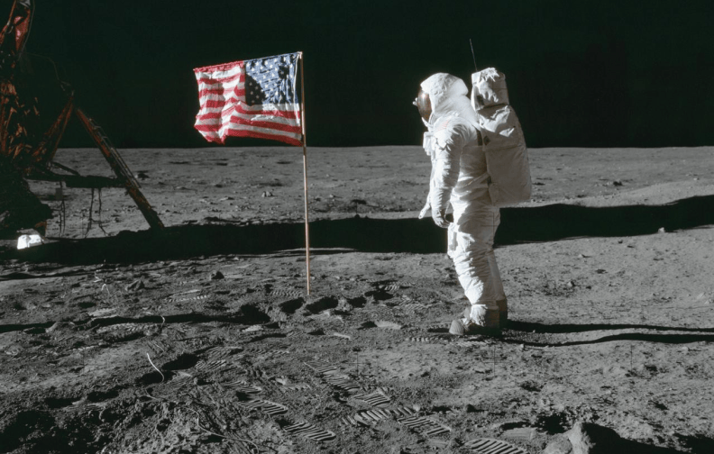
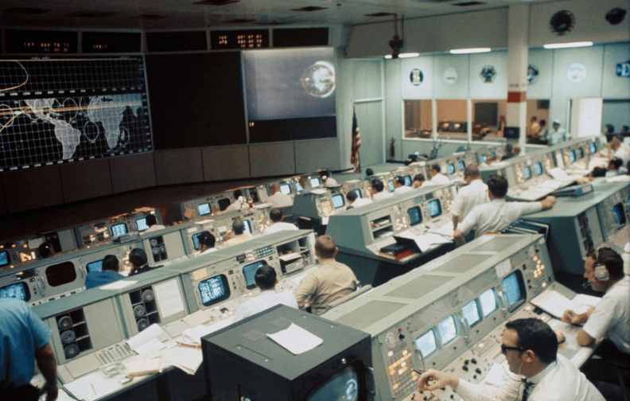
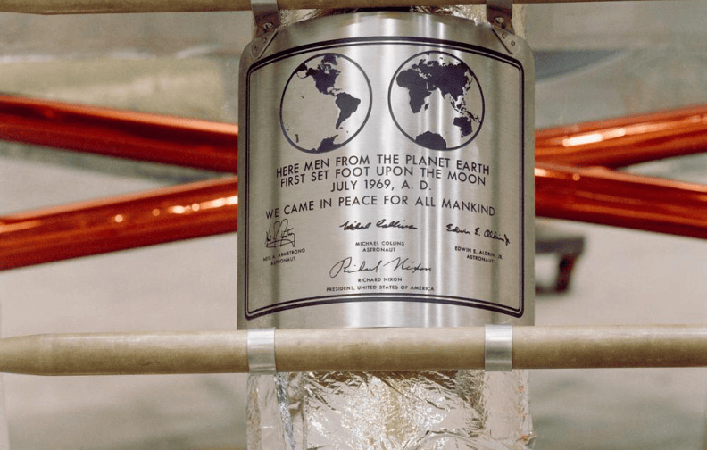

Scroll
Buzz Aldrin on the moon
1969
©NASA archives
Apollo 11 was the historic NASA mission that landed humans on the Moon for the first time. On July 20, 1969, astronauts Neil Armstrong and Buzz Aldrin became the first to walk on the lunar surface. Armstrong’s famous words, “That’s one small step for man, one giant leap for mankind,” marked a defining moment in human history, showcasing the possibilities of exploration and innovation.
Mission Control during Apollo 11
1969
©NASA archives
The iconic Mission Control Center (MCC), also known as "Houston," where space missions are managed and monitored. This center has overseen historic missions, including the Apollo moon landings, the Space Shuttle program, and operations aboard the International Space Station (ISS).
For all mankind Plaque
1969
©NASA archives
The spirit of Apollo 11 mission—carrying a plaque on the lunar module that read, "We came in peace for all mankind"—emphasized that the achievement was not just for the United States but for the entire world. The phrase captures the unifying vision of space exploration as a venture for the benefit and inspiration of all humanity.
